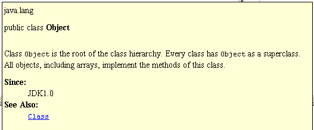

To quickly see JavaDoc for a class or a member.
To be able to see JavaDocs for an item residing in the classpath the JavaDoc search path may need to be specified in the Project Options.
For JDK classes an additional archive with html pages must be downloaded from the http://java.sun.com/docs/index.html, unpacked and its location specified in the Project Options.